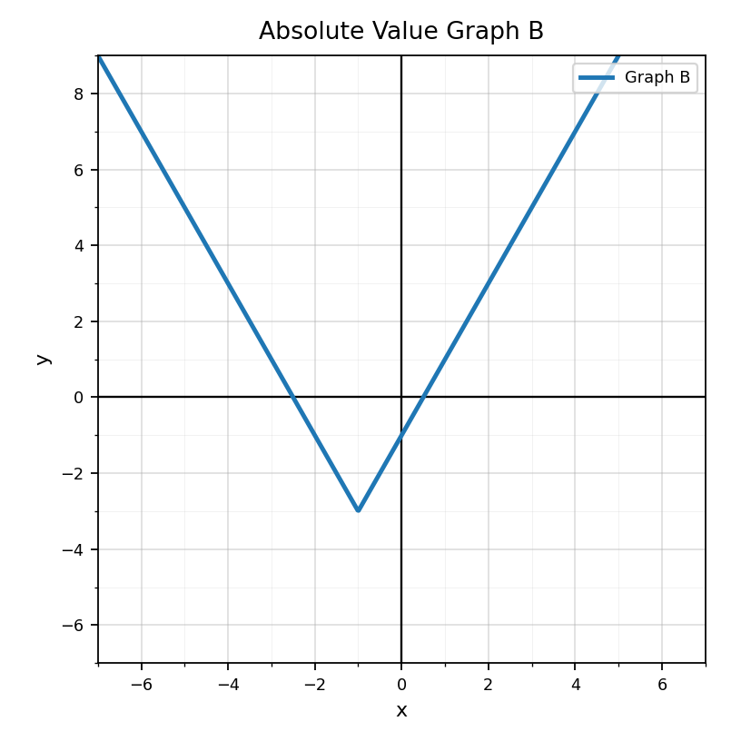
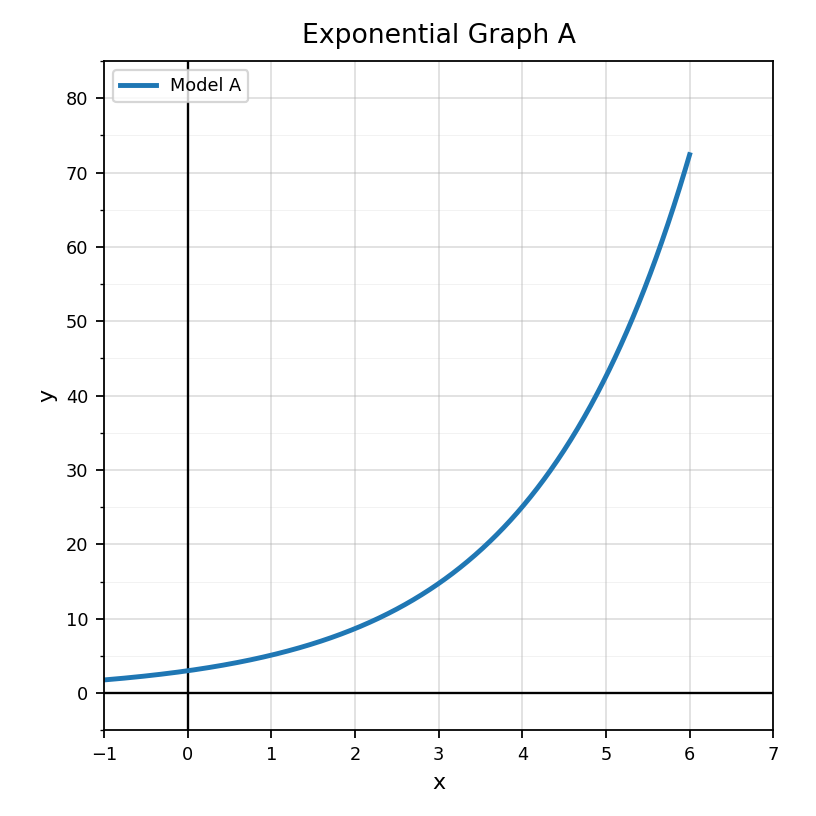
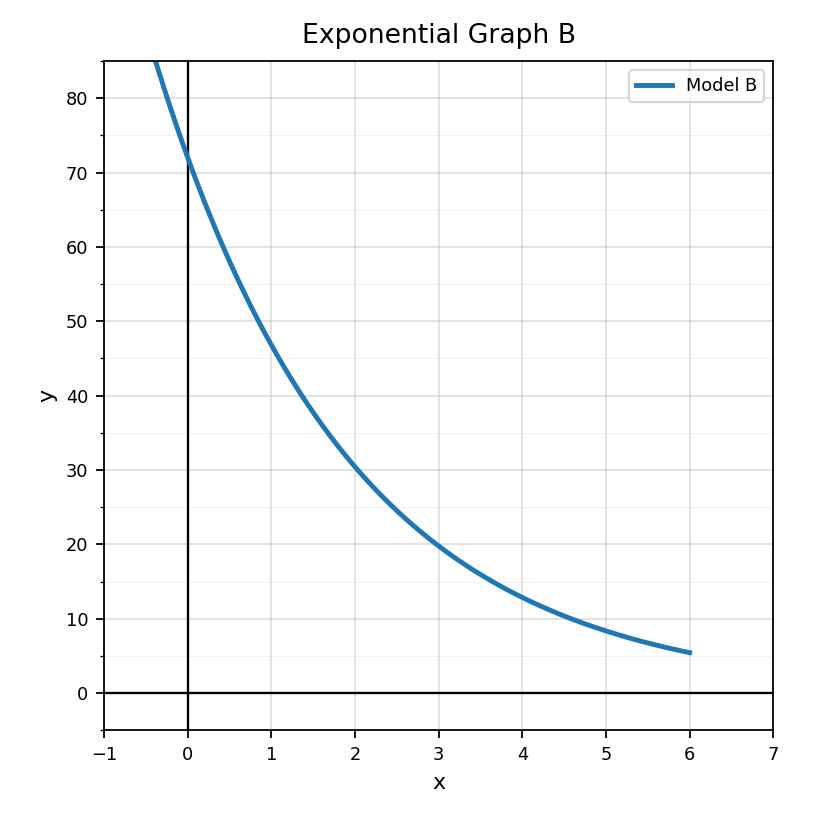
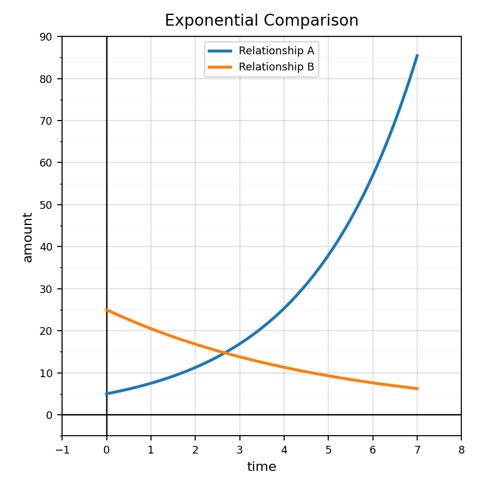
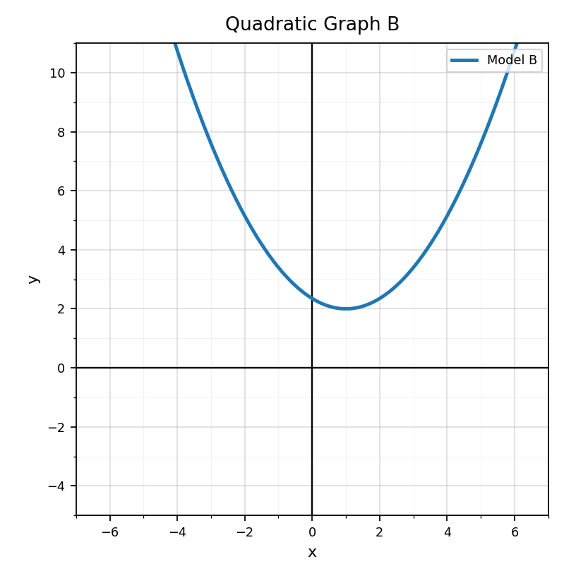

Practice Set 2: This is a section-aligned spiral: 8.3 with 7.3 and 6.3. It is not a previous-section spiral.
Use Graph B. Identify the vertex.

In $|x+3|$, what value is the distance measured from?
Solve $|x-4|=6$ and explain the two possible distances.
A student solves $|x+3|=7$ and gives only $x=4$. Analyze the error and correct the solution.
Which phrase best describes an exponential graph?
Use the graph to estimate the value when $x=0$.

Use the graph to estimate the output when $x=3$.

For $h(x)=5(1.5)^x$, find $h(2)$.
Make a four-row table for $y=2(3)^x$ using $x=0,1,2,3$.
Use the comparison graph. Which relationship is decreasing? Explain briefly.

Explain why exponential graphs change by multiplication instead of addition. Use a table or example.
Design a small table that would graph as exponential decay. Explain how someone could tell from the table.
For $3x^2+7x-2=0$, identify $a$, $b$, and $c$.
If the discriminant is $0$, how many real solutions does the quadratic equation have?
Calculate the discriminant for $x^2-6x+9=0$ and state the number of real solutions.
Use the graph to predict the number of real solutions, then explain how the discriminant could confirm it.
